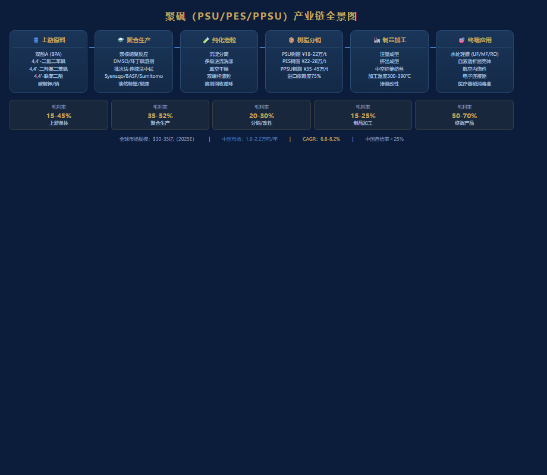
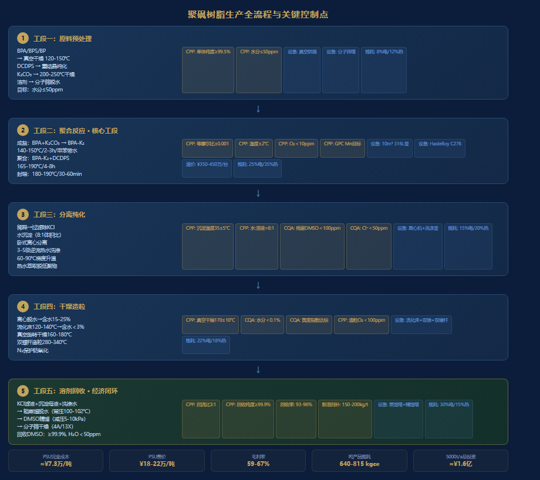

目录
1. 执行摘要
核心发现
市场判断：
聚砜类高聚物（PSU/PES/PPSU）作为特种工程塑料金字塔顶端材料，全球市场规模约28-35亿美元（2025年），年复合增长率6.8-8.2%。中国市场需求增速显著高于全球（12-15%），但国产化率不足25%，进口替代空间巨大。核心驱动力来自水处理膜（PES中空纤维膜）、医疗器械（PSU血液透析器壳体）和航空航天（PPSU轻量化结构件）三大领域。
技术判断： 聚砜生产工艺壁垒极高。核心难点在于：①
亲核芳香取代缩聚反应的精确控制（等摩尔比、无水无氧条件）；②
高分子量产品的聚合终点判断；③ 残留溶剂（DMSO/NMP/环丁砜）的ppm级脱除；④
溶剂回收的经济性闭环。目前全球仅Solvay、BASF、Sumitomo三家掌握全链条量产技术，国内尚无企业实现稳定商业化量产。
竞争判断：
Solvay（现Syensqo）以Udel®（PSU）、Radel®（PPSU）和Veradel®（PES）三大系列占据全球约55-60%市场份额。BASF的Ultrason®系列占比约15-18%。Sumitomo化学约8-10%。中国方面，山东浩然特塑、天津砚津科技、金发科技等正进行中试及小规模量产，但产品分子量分布、黄度指数、残留单体等关键指标与进口产品仍有差距。
战略建议：
建议分三阶段切入：第一阶段（1-2年） ——聚焦PES水处理膜级树脂（技术门槛最低、需求最大），建设3000吨/年示范线，围绕DMSO溶剂回收体系建立工艺闭环；第二阶段（3-4年） ——扩展至PSU医疗器械级，取得USP
Class VI和ISO
10993认证；第三阶段（5-6年） ——攻克PPSU航空级，产能扩至万吨级，实现全系列覆盖。
关键数字
指标
数值
全球聚砜市场规模（2025E）
$30-35亿
中国市场年需求量
1.8-2.2万吨
国内生产能力
~5000吨/年
进口依赖度
75-80%
PSU树脂进口均价
¥18-22万/吨
PES树脂进口均价
¥22-28万/吨
PPSU树脂进口均价
¥35-45万/吨
单体BPA成本
¥8,000-12,000/吨
单体DCDPS成本
¥5.5-8万/吨
万吨级产线投资估算
¥12-18亿
溶剂回收率目标
≥95%
产品毛利率（估算）
35-52%
2. 产品/行业定义与核心特性
2.1 化学定义
聚砜（Polysulfone）类高聚物是指在分子主链上含有砜基（—SO₂—）和芳环结构的一类热塑性特种工程塑料。根据二酚单体的不同，主要分为三个品种：
品种
英文缩写
二酚单体
二氯单体
化学结构特征
双酚A型聚砜
PSU
双酚A (BPA)
4,4’-二氯二苯砜 (DCDPS)
含异丙叉基（—C(CH₃)₂—）
聚醚砜
PES
4,4’-二羟基二苯砜 (BPS)
DCDPS
全芳醚砜结构，无脂肪链
聚苯砜
PPSU
4,4’-联苯二酚 (BP)
DCDPS
含联苯结构，刚性最强
2.2 聚合反应化学
三种聚砜均通过亲核芳香取代缩聚反应（Nucleophilic Aromatic
Substitution Polycondensation） 合成。反应通式：
n HO—Ar—OH + n Cl—Ar'—SO₂—Ar'—Cl + M₂CO₃ ──→
—[O—Ar—O—Ar'—SO₂—Ar']ₙ— + 2n MCl + n CO₂ + n H₂O其中 M = Na 或 K（碳酸盐催化剂），Ar
为对应的二酚残基，Ar’为二苯砜残基。
反应机理要点： -
碳酸钾/碳酸钠使二酚去质子化生成酚盐负离子（亲核试剂） -
酚盐进攻DCDPS的对位氯取代位置，发生芳香亲核取代（SNAr） -
砜基的强吸电子效应活化芳环上的氯离去基团 -
反应需在无水条件下进行，水会终止缩聚链增长 -
副产物为CO₂、H₂O和MCl（NaCl/KCl），无有机副产物产生
2.3 核心参数对比表
参数
PSU (Udel®)
PES (Veradel®)
PPSU (Radel® R)
Tg（玻璃化转变温度，℃）
185-190
220-230
220-225
密度（g/cm³）
1.24
1.37
1.29
拉伸强度（MPa）
70-75
80-90
70-76
弯曲模量（GPa）
2.7-2.8
2.6-2.9
2.4-2.5
热变形温度（1.82MPa，℃）
174
204
207
吸水率（24h，%）
0.22-0.30
0.60-0.80
0.37
氧指数（LOI，%）
30
38
36
UL94阻燃等级
V-0
V-0
V-0
透明性
透明-淡琥珀
透明-淡琥珀
透明-淡琥珀
介电常数（1MHz）
3.1
3.5
3.4
3. 产业链/价值链分析
3.1 产业链全景

聚砜产业链全景图
3.2 价值链利润分布
环节
毛利率
关键壁垒
BPA单体生产
15-20%
规模效应，技术成熟
DCDPS单体生产
35-45%
合成难度高，产能集中
聚砜树脂聚合
35-52%
工艺know-how，品控难度
改性/共混造粒
20-30%
配方技术，客户定制
制品加工（注塑/挤出）
15-25%
加工温度高（340-390℃）
终端产品（医疗器械等）
50-70%
认证壁垒，品牌溢价
4. 市场规模与增长预测
4.1 全球市场
年份
全球市场规模（亿美元）
需求量（万吨）
增长率
2020
21.9
8.5
—
2022
25.3
9.8
7.5%
2025E
32.5
12.6
8.0%
2028E
44.0
16.8
7.8%
2030E
54.0
20.5
7.2%
4.2 中国市场
年份
需求量（吨）
国产供应（吨）
进口量（吨）
进口占比
2020
8,500
1,200
7,300
85.9%
2022
12,000
2,000
10,000
83.3%
2025E
20,000
4,500
15,500
77.5%
2028E
32,000
12,000
20,000
62.5%
2030E
45,000
22,000
23,000
51.1%
4.3 分品种需求结构（中国，2025E）
品种
需求量（吨）
占比
主要应用
PES
10,500
52.5%
水处理膜、血液透析膜
PSU
6,500
32.5%
医疗器械壳体、食品接触
PPSU
3,000
15.0%
航空、高端电子
5. 需求端深度分析
5.1 水处理膜（PES核心市场）
全球膜市场年增长：
8-10%，PES膜因耐氯性优异，在UF/MF膜中占比持续提升中国水处理膜需求： ≈6,500吨
PES（2025E），占国内总需求62%驱动因素：
市政污水处理提标改造、工业废水零排放（ZLD）、海水淡化预处理竞争材料：
PVDF（耐化学性更好但亲水性差，需改性）；PSF（机械强度好但Tg较低）
5.2 医疗器械（PSU核心市场）
血液透析器壳体：
中国年透析患者约85万人（2025），年增12%，每名患者年均消耗约1.5kg
PSU壳体消毒盒/手术器械托盘：
耐蒸汽灭菌（134℃循环），半透明便于器械识别牙科/正畸器械： 高强度、生物相容性好认证门槛： 需通过USP Class VI、ISO
10993生物相容性测试，认证周期18-36个月
5.3 航空航天（PPSU核心市场）
客舱内饰：
替代铝合金和PC，减重30-40%，FST（阻燃/烟密度/毒性）性能优异典型用量： 波音787每架使用约200-300kg
PPSU部件（座椅骨架、行李架组件、侧壁板连接件）中国C919/C929需求：
C929宽体客机预计2030年前后投入运营，将显著拉动PPSU需求
5.4 电子电气
连接器/插座： 耐温＞180℃，UL94 V-0自熄电容器薄膜： 高Tg、低介电损耗锂电池隔膜涂覆： PSU/PES涂覆提升热稳定性
6. 竞争格局与情报
6.1 全球主要生产商
企业
品牌
品种
产能（吨/年）
市占率
备注
Syensqo（原Solvay）
Udel®/Radel®/Veradel®
PSU/PPSU/PES
~45,000
55-60%
美国Marietta工厂+印度Panoli
BASF
Ultrason®
PSU/PES/PPSU
~18,000
15-18%
德国Ludwigshafen
Sumitomo化学
Sumikaexcel®
PES
~5,000
5-7%
日本Ehime
山东浩然特塑
—
PSU/PES
~2,000
2-3%
中国威海，扩产中
天津砚津科技
—
PSU/PES
~1,000
1-2%
中试规模
金发科技
—
PSU/PES
~500
<1%
研发/小试
6.2 中国在建/规划产能
企业
规划产能（吨/年）
目标品种
预计投产
山东浩然特塑
5,000（二期）
PSU/PES/PPSU
2027-2028
沃特股份
3,000
PSU/PES
2027
万华化学
3,000-5,000
PSU/PES
2028+
南京聚隆
2,000
PSU/PES
2027
同益股份
1,500
PSU
2026-2027
6.3 竞争壁垒分析
壁垒类型
难度评级
说明
单体纯度
★★★★☆
DCDPS纯度需≥99.5%，异构体控制
等摩尔比控制
★★★★★
偏差＜0.1mol%才能获得高分子量
无水无氧条件
★★★★☆
水分＜50ppm，否则分子量骤降
溶剂回收纯化
★★★★☆
回收率＞95%才能经济性闭环
产品纯化
★★★★★
残留溶剂＜500ppm，残留单体＜100ppm
批次一致性
★★★★☆
分子量波动＜±5%
客户认证
★★★★★
医疗器械认证3-5年
7. 生产工艺深度剖析
7.1 生产全流程总览

聚砜生产全流程与关键控制点
聚砜树脂生产工艺分为五大工段 ：
工段一：原料预处理 → 单体纯化、干燥、溶剂脱水
工段二：聚合反应 → 缩聚反应、分子量控制
工段三：产物分离纯化 → 聚合物沉淀、洗涤、残留脱除
工段四：干燥造粒 → 脱水干燥、造粒包装
工段五：溶剂回收 → 溶剂蒸馏纯化、循环复用、副产物处理7.2 工段一：原料预处理
7.2.1 主要原料规格
原料
CAS号
规格要求
关键杂质控制
典型供应商
参考价格（¥/吨）
双酚A (BPA)
80-05-7
≥99.9%, 聚碳级
游离酚＜50ppm, Fe＜0.5ppm
Covestro, 长春化工, 鲁西化工
8,000-12,000
4,4’-二氯二苯砜 (DCDPS)
80-07-9
≥99.5%
2,4’-异构体＜0.3%, 单氯杂质＜0.1%
江苏吴帆, Vertellus, 浙江扬帆
55,000-80,000
4,4’-二羟基二苯砜 (BPS)
80-09-1
≥99.5%
Fe＜1ppm, 灰分＜0.1%
江苏吴帆, 寿光卫东
45,000-65,000
4,4’-联苯二酚 (BP)
92-88-6
≥99.5%
邻位异构体＜0.2%
SI Group, 本溪吉凯隆
120,000-180,000
碳酸钾 (K₂CO₃)
584-08-7
≥99.8%, 无水级
Cl⁻＜50ppm, 水分＜0.1%
浙江大洋, 阿拉丁
8,000-10,000
碳酸钠 (Na₂CO₃)
497-19-8
≥99.8%, 无水级
Cl⁻＜50ppm
山东海化
2,500-3,500
二甲基亚砜 (DMSO)
67-68-5
≥99.9%, 无水级
水分＜100ppm
湖北兴发, Gaylord
12,000-18,000
N-甲基吡咯烷酮 (NMP)
872-50-4
≥99.9%, 电子级
水分＜100ppm, 胺值＜10ppm
迈奇化学, BASF
20,000-28,000
环丁砜 (Sulfolane)
126-33-0
≥99.5%, 无水级
水分＜100ppm, 酸值＜0.1
辽阳石化, Chevron Phillips
18,000-25,000
二苯砜 (Diphenyl Sulfone)
127-63-9
≥99.0%
Fe＜2ppm
江苏吴帆
30,000-40,000
7.2.2 单体预处理流程
BPA/BPS/BP ──→ 真空干燥（120-150℃, <1kPa, 4-6h, 水分≤50ppm）
↓
DCDPS ──→ 重结晶/熔融结晶纯化 → 真空干燥（80-100℃）
↓
K₂CO₃ ──→ 真空干燥（200-250℃, <1kPa, 8-12h, 水分≤50ppm）
↓
溶剂 ──→ 分子筛干燥 / 共沸脱水（甲苯带水法）
↓
无水单体 + 无水溶剂 → 进入聚合工段7.2.3 工序控制点-原料预处理
控制点
控制参数
控制方法
频率
单体纯度
DCDPS≥99.5%, BPA≥99.9%
HPLC/GC
每批
单体异构体
2,4’-DCDPS＜0.3%
HPLC
每批
单体水分
≤50ppm
卡尔费休法
干燥后检测
金属离子
Fe＜1ppm, Na/K＜5ppm
ICP-OES
每批
溶剂水分
≤100ppm
卡尔费休法
每釜投料前
K₂CO₃粒径
200-400目
筛分法
每批
甲苯回流带水
回流温度110-115℃
温度监控
连续
7.3 工段二：聚合反应
7.3.1 反应体系配置
以PSU（BPA/DCDPS体系）为例：
参数
标称值
容许范围
说明
二酚:二氯摩尔比
1.000:1.000
1.000:1.000±0.001
精确到0.1mol%，Carothers方程关键参数
K₂CO₃:二酚摩尔比
1.05-1.10:1
1.05-1.15:1
过量确保完全去质子化
溶剂体系
DMSO/甲苯（共沸带水）
—
或环丁砜/二苯砜高温体系
固含量（单体/溶剂 w/w）
25-40%
20-50%
后期粘度急剧上升
反应温度
140-165℃（甲苯回流段）
—
带水阶段
165-190℃（聚合段）
±2℃
甲苯蒸出后升温
反应时间
4-8h（聚合段）
—
取决于目标分子量
反应压力
常压（N₂保护）
—
或微正压5-10kPa
搅拌速率
50-200 rpm
—
随粘度调整
7.3.2 反应阶段详解
阶段1：成盐反应（Salt Formation）
BPA + K₂CO₃ → BPA-K₂ + CO₂↑ + H₂O↑
温度：140-150℃
时间：2-3h
介质：DMSO + 甲苯（共沸带水）
监控：CO₂逸出速率趋于零 → 成盐完成
甲苯-水共沸物分水器不再有水出现阶段2：聚合反应（Polycondensation）
BPA-K₂ + DCDPS → —[BPA-O-DPS]ₙ— + KCl↓
温度：165-190℃（逐步升温，蒸出甲苯）
时间：4-8h
监控：搅拌扭矩/电流 → 粘度增长 → 分子量增长
定期取样GPC测分子量阶段3：封端/终止（End-capping）
加入单官能封端剂（如4-氯二苯砜或对叔丁基酚）
温度：180-190℃
时间：30-60min
目的：控制分子量、消除活性端基、提高热稳定性以PES（BPS/DCDPS体系）为例的关键差异：
参数
PES（vs PSU）
溶剂
倾向用二苯砜（更高温，>220℃）
反应温度
220-280℃（二苯砜体系）或160-200℃（环丁砜体系）
K₂CO₃用量
1.05-1.10:1（与BPS摩尔比）
特点
BPS自缩聚倾向需抑制，温度控制更关键
以PPSU（BP/DCDPS体系）为例的关键差异：
参数
PPSU（vs PSU）
溶剂
二苯砜/环丁砜（需更高温度溶解）
反应温度
230-290℃（二苯砜体系）
BP的活性
联苯二酚活性略低于BPA，需更高温补偿
K₂CO₃用量
1.08-1.15:1
特点
BP高温易氧化，N₂保护需严格执行
7.3.3 工序控制点-聚合反应
控制点
控制参数
分析方法
频率
紧急处置
等摩尔比校验
偏差＜0.1mol%
投料前DCDPS/BPA HPLC定量
每釜
偏差＞0.2%→调整补料
水分确认
≤50ppm
卡尔费休（溶剂+单体）
投料前
水分超标→延长脱水
CO₂逸出
速率趋零
气泡计数器/流量计
成盐阶段连续
异常→排查K₂CO₃活性
反应温度曲线
±2℃
釜内多热电偶
全程连续
超温→降低加热功率
搅拌扭矩
趋势曲线
扭矩传感器
全程连续
扭矩突降→分子量降解预警
GPC分子量
Mn, Mw, PDI
GPC (DMF, PS标定)
每60-90min取样
Mn增长停滞→补加单体调整
N₂保护
O₂＜10ppm
在线氧分析仪
连续
O₂＞50ppm→增大N₂流量
反应终点判断
目标Mn±5%
GPC + 扭矩稳定
聚合后期
—
7.3.4 聚合反应器设计
┌─────────────────────────────────────────┐
│ 聚合反应釜（核心设备） │
├─────────────────────────────────────────┤
│ 类型： 不锈钢316L/哈氏合金C276 │
│ 容积： 5-15m³（批次生产） │
│ 搅拌： 双螺带/锚式+MIG组合桨 │
│ 温控： 导热油夹套+半管盘管（±1℃） │
│ 加热功率： 200-400kW（电加热导热油） │
│ 换热面积： 20-50m² │
│ 附件： │
│ • 分水器（Dean-Stark，甲苯回流带水） │
│ • 蒸馏柱（甲苯蒸出段） │
│ • N₂分布器（底部通入，维持惰性气氛） │
│ • 多点热电偶（釜内上中下各2支） │
│ • 在线粘度/扭矩传感器 │
│ • 取样口（N₂保护，防空气中水分进入） │
│ • 爆破片（安全泄压） │
│ 参考造价： ¥200-500万/台（含温控和搅拌） │
└─────────────────────────────────────────┘7.4 工段三：产物分离纯化
7.4.1 纯化流程
聚合反应液（聚合物+DMSO+KCl+残留单体+低聚物）
│
▼
┌──────────────────────┐
│ ① 稀释/过滤 │
│ 加入DMSO稀释至粘度 │
│ 可控 → 过滤除KCl盐 │
│ 滤饼KCl→去溶剂回收 │
└──────┬───────────────┘
│
▼
┌──────────────────────┐
│ ② 沉淀（Precipitation）│
│ 聚合物溶液滴入非溶剂 │
│ 典型非溶剂：水/甲醇 │
│ 体积比：聚合物溶液:水 │
│ = 1:5到1:10 │
│ 温度：20-50℃ │
│ 搅拌：高速分散器 │
└──────┬───────────────┘
│
▼
┌──────────────────────┐
│ ③ 过滤/离心分离 │
│ 离心机：卧式螺旋 │
│ 孔径：10-50μm筛网 │
│ 母液→去溶剂回收 │
└──────┬───────────────┘
│
▼
┌──────────────────────┐
│ ④ 多级逆流洗涤 │
│ 3-5级热水洗涤（60-90℃）│
│ 每级停留时间：30-60min│
│ 目的：脱除残留溶剂 │
│ 脱除残留单体 │
│ 脱除无机盐 │
└──────┬───────────────┘
│
▼
┌──────────────────────┐
│ ⑤ 热水萃取（可选） │
│ Soxhlet或加压萃取 │
│ 目的：脱除低聚物 │
│ 深度脱除残留DMSO │
└──────┬───────────────┘
│
▼
进入干燥工段7.4.2 沉淀工序详解
非溶剂选择：
非溶剂
优点
缺点
适用性
水
成本最低，环境友好
DMSO/水分离能耗高
★★★★★ 工业首选
甲醇
DMSO分离容易
易燃，需防爆，成本高
★★★ 高纯级可选
乙醇/水混合
兼顾洗涤效果和成本
需精确配比
★★★☆
异丙醇
洗涤效果好
成本更高
★★ 特殊用途
沉淀工艺参数：
参数
推荐值
控制范围
影响
非溶剂:聚合物溶液比
8:1
5:1-10:1
影响溶剂扩散速度和粒子形态
沉淀温度
30-40℃
20-60℃
温度过高→粒子团聚/溶剂包裹
滴加速度
0.5-2 L/min
—
过快→粒子不均
搅拌速率
500-1500 rpm
—
剪切力影响粒子粒径
陈化时间
30-60 min
20-120 min
促进溶剂充分扩散
7.4.3 洗涤工序详解
洗涤级数
温度（℃）
液固比
停留时间
目标残留
第1级
60-70
10:1
30min
DMSO＜5,000ppm
第2级
70-80
8:1
30min
DMSO＜500ppm
第3级
80-90
6:1
45min
DMSO＜100ppm
第4级（可选）
90-95
5:1
60min
DMSO＜30ppm
热水萃取
95-100
—
2-4h（循环）
DMSO＜10ppm
7.4.4 工序控制点-分离纯化
控制点
控制参数
分析方法
频率
聚合物溶液粘度
目标范围
Brookfield粘度计
稀释后每釜
KCl过滤效率
盐含量＜0.1%
灰分分析
每批过滤后
沉淀粒子形态
粒径50-500μm
显微镜/激光粒度仪
每批
洗涤后DMSO残留
目标级＜100ppm
GC顶空/HPLC
每级洗涤后
洗涤后Cl⁻残留
＜50ppm
离子色谱/硝酸银滴定
最终洗涤后
残留BPA单体
＜10ppm
HPLC
最终产品
残留DCDPS
＜5ppm
HPLC
最终产品
灰分
＜0.05%
马弗炉灼烧
每批
7.5 工段四：干燥造粒
7.5.1 干燥流程
湿聚合物（含水50-80%）+ 残留溶剂＜100ppm
│
▼
┌──────────────────────┐
│ ① 机械脱水 │
│ 离心机（3000-5000rpm）│
│ 含水降至15-25% │
└──────┬───────────────┘
│
▼
┌──────────────────────┐
│ ② 预干燥（流化床） │
│ 热风120-140℃ │
│ 含水降至1-3% │
│ 时间：2-4h │
└──────┬───────────────┘
│
▼
┌──────────────────────┐
│ ③ 深度干燥（真空） │
│ 真空旋转干燥机 │
│ 温度：160-180℃ │
│ 真空度：＜1kPa │
│ 含水＜0.1%（1000ppm） │
│ 时间：6-12h │
└──────┬───────────────┘
│
▼
┌──────────────────────┐
│ ④ 造粒/包装 │
│ 双螺杆挤出造粒 │
│ 温度：280-340℃ │
│ N₂保护防氧化 │
│ 密封防潮包装 │
└──────────────────────┘7.5.2 干燥设备
设备
规格
产能
能耗
参考造价
卧式螺旋离心机
316L不锈钢，筛篮式
500-1000 kg/h
30-55kW
¥80-150万
振动流化床干燥机
热风循环，分段控温
300-500 kg/h
80-120kW
¥60-120万
真空旋转干燥机（双锥）
容积3-5m³
300-500 kg/批
45-75kW
¥50-100万
双螺杆挤出造粒机
φ65-75mm，L/D=36-48
200-400 kg/h
90-160kW
¥150-300万
7.5.3 工序控制点-干燥造粒
控制点
控制参数
分析方法
频率
离心后含水量
15-25%
水分分析仪
每批
流化床出口含水
＜3%
在线水分仪
连续
真空干燥终点含水
＜1000ppm
卡尔费休
每批出料前
热风洁净度
＞0.3μm颗粒＜1000/m³
粒子计数器
每班
造粒温度
280-340℃（品种决定）
料温热电偶
连续
造粒N₂保护
O₂＜100ppm
氧分析仪
连续
粒子外观
均匀无黑点
目视+色差仪
每批
黄度指数（YI）
品种决定
分光光度计
每批
7.6 工段五：溶剂回收
7.6.1 溶剂回收全流程
这是聚砜生产成本控制的核心环节 。溶剂（DMSO/NMP/环丁砜/二苯砜）成本占可变成本的25-35%，回收率每降低1个百分点，吨产品利润减少约¥800-1,500。
┌──────────────────────────────────────────────────────┐
│ 溶剂回收系统（三流合一） │
├──────────────────────────────────────────────────────┤
│ │
│ 来源1：KCl过滤滤液（DMSO+微量H₂O+低聚物+KCl） │
│ 来源2：沉淀母液（DMSO+H₂O+微量聚合物细粉） │
│ 来源3：洗涤废水（H₂O+DMSO+微量盐） │
│ │
│ 汇流→ 溶剂回收工段 │
│ │ │
│ ▼ │
│ ┌────────────────┐ │
│ │ ① 粗蒸馏（脱水塔）│ 操作条件： │
│ │ 常压，塔顶100-102℃│ 塔顶：水（DMSO＜0.5%）→废水处理 │
│ │ 塔底：DMSO+重份 │ 塔底：DMSO（含水＜1%） │
│ └───────┬────────┘ │
│ │ │
│ ▼ │
│ ┌────────────────┐ │
│ │ ② 精馏（DMSO塔） │ 操作条件： │
│ │ 减压蒸馏 │ 塔顶：50-80℃（5-10kPa绝压） │
│ │ 理论塔板数：30-40│ 回流比：2-5:1 │
│ └───────┬────────┘ 塔底：高沸物/低聚物→废液焚烧 │
│ │ │
│ ▼ │
│ ┌────────────────┐ │
│ │ ③ 分子筛干燥 │ 4A/13X分子筛 │
│ │ 常温吸附脱水 │ 水分＜50ppm │
│ └───────┬────────┘ 分子筛再生（250-300℃，N₂吹扫） │
│ │ │
│ ▼ │
│ 回收DMSO（纯度≥99.9%，水分＜50ppm）→ 循环使用 │
│ │
└──────────────────────────────────────────────────────┘7.6.2 不同溶剂回收工艺对比
溶剂
回收工艺
关键参数
回收率
能耗（kW·h/吨溶剂）
DMSO
粗蒸馏+减压精馏+分子筛
减压5-10kPa, 回流比3:1
93-96%
800-1,200
NMP
粗蒸馏+减压精馏
减压3-8kPa, 回流比2:1
92-95%
900-1,300
环丁砜
减压精馏（高沸点287℃）
减压1-5kPa, 全回流
90-93%
1,200-1,800
二苯砜
减压精馏+结晶
减压0.5-2kPa
88-92%
1,500-2,000
甲苯（带水剂）
共沸后分水→蒸馏
常压, 回流比1:1
85-90%
300-500
7.6.3 DMSO溶剂回收工序控制点
控制点
控制参数
方法
频率
脱水塔顶温
100-102℃
热电偶
连续
脱水塔釜温
185-192℃
热电偶
连续
DMSO精馏塔顶压
8±2kPa
真空计
连续
DMSO精馏塔顶温
55-65℃（对应8kPa）
热电偶
连续
DMSO精馏塔釜温
130-140℃
热电偶
连续
回流比
3:1（可调）
流量计
连续
回收DMSO水分
≤100ppm
卡尔费休
每批
回收DMSO纯度
≥99.9%
GC
每批
回收DMSO酸值
≤0.05 mg KOH/g
滴定
每周
分子筛再生周期
每24-48h
—
定时
回收DMSO色度
≤20 APHA
比色
每批
7.6.4 溶剂消耗与核算
项目
DMSO体系
环丁砜体系
备注
吨产品溶剂量
3.0-4.0吨
2.5-3.5吨
固含量决定
回收率
95%
91%
含蒸馏残渣损失
吨产品新溶剂消耗
150-200kg
225-315kg
= 用量 × (1-回收率)
吨产品溶剂成本
¥1,800-3,600
¥4,050-7,875
按单价×消耗量
溶剂占可变成本比
25-30%
30-38%
环丁砜体系偏高
7.6.5 副产物（KCl/NaCl）处理
项目
参数/说明
吨产品副产KCl
≈0.7-0.8吨（理论值每摩尔聚合物副产2摩尔KCl）
KCl纯度（过滤后）
85-95%（含少量聚合物和溶剂残留）
KCl纯化工艺
水洗→重结晶→干燥→工业级KCl出售
KCl售价
¥500-1,500/吨（工业级/农业级）
副产收入
可抵扣部分原料成本（约¥350-1,200/吨产品）
7.7 全流程工艺控制总表
工段
CPP（关键工艺参数）
设定值
容许范围
CQA（关键质量属性）
检测频率
原料
DCDPS纯度
≥99.5%
—
异构体＜0.3%
每批
原料
单体水分
≤50ppm
—
卡尔费休
干燥后
聚合
BPA:DCDPS摩尔比
1.000
±0.001
—
投料前
聚合
反应温度（聚合段）
175℃
±2℃
Mn增长曲线
连续
聚合
搅拌扭矩
趋势
—
间接Mw指标
连续
聚合
N₂中O₂
＜10ppm
—
防止氧化降解
连续
纯化
沉淀温度
35℃
±5℃
粒子形态
每批
纯化
水:聚合物溶液比
8:1
±2
溶剂扩散效率
每批
纯化
洗涤水温（末级）
90℃
±5℃
残留DMSO
每批
干燥
真空干燥温度
170℃
±10℃
水分＜0.1%
每批
干燥
真空度
＜1kPa
—
水分
连续
造粒
挤出温度
320℃
±15℃
黄度指数
每批
溶剂回收
DMSO精馏塔釜温
135℃
±5℃
回收DMSO纯度
每批
溶剂回收
DMSO精馏回流比
3:1
±0.5
回收DMSO水分
每批
成品
产品Mn
品种决定
±5%
GPC
每批
成品
灰分
＜0.05%
—
马弗炉
每批
8. 设备选型与经济性分析
8.1 核心设备清单及选型
8.1.1 5000吨/年 PSU生产线设备配置
设备
规格/型号
数量
材质
关键参数
单价（¥万元）
总价（¥万元）
聚合反应釜
10m³, 316L+Hastelloy C276
3
316L/C276
200kW, 双螺带搅拌
350-450
1,050-1,350
稀释/溶解釜
20m³
2
316L
100kW, 锚式搅拌
80-120
160-240
板框压滤机
120m²过滤面积
2
PP/316L
1.0MPa, 自动卸渣
30-50
60-100
沉淀釜
25m³
3
316L
高速分散器, 控温
60-90
180-270
卧式螺旋离心机
φ600×1800
3
316L
3800rpm, 55kW
80-120
240-360
多级逆流洗涤釜
15m³×5级
1套
316L
级间泵送, 控温
200-300
200-300
振动流化床干燥机
500kg/h
2
304
120kW, 三段控温
80-120
160-240
真空双锥干燥机
5m³
3
316L
100kPa真空, 200℃
60-90
180-270
双螺杆造粒机
φ72, L/D=44
2
特种合金
160kW, N₂保护
200-300
400-600
DMSO脱水塔
φ800×12000
1
316L
30块塔板
150-200
150-200
DMSO精馏塔
φ600×15000
1
316L
减压, 40块塔板
200-300
200-300
分子筛干燥塔
φ1200×3000
2
304
4A分子筛填充
20-30
40-60
导热油炉
3,000,000 kcal/h
1
—
燃气/电加热
120-180
120-180
冷冻机组
500kW
1
—
-15℃冷却水
80-120
80-120
N₂制备系统
99.999%
1
—
PSA或膜分离
100-150
100-150
纯水系统
10t/h RO+EDI
1
—
电导率＜0.1μS/cm
60-100
60-100
DCS控制系统
3000 IO点
1
—
含MES
500-800
500-800
设备总价（不含安装） ≈3,880-5,640
8.1.2 设备投资分类汇总
类别
投资（¥万元）
占比
反应设备（聚合釜+辅釜）
1,450-1,890
31%
分离纯化设备
680-1,030
18%
干燥造粒设备
740-1,110
19%
溶剂回收设备
510-720
13%
公用工程设备
500-890
19%
设备合计 3,880-5,640 100%
8.2 总投资估算（5000吨/年）
费用项
金额（¥万元）
备注
设备购置
4,500（中值）
含DCS
设备安装
1,350（设备30%）
管道、电气、仪表
建筑工程
3,000
厂房3500m²+仓库2000m²+罐区
公用工程配套
1,500
锅炉、制冷、配电、N₂、纯水
环保设施
1,200
废气焚烧、废水MVR、固废
设计、监理、管理
1,200
含HAZOP分析
不可预见费
1,000
约8%
铺底流动资金
2,500
原料+在产品+成品库存
总投资 ≈16,250 约1.6亿
8.3 生产成本模型
8.3.1 吨产品可变成本（以PSU为例）
成本项
单耗（吨/吨产品）
单价（¥/吨）
吨成本（¥）
占比
BPA
0.572
10,000
5,720
7.2%
DCDPS
0.719
65,000
46,735
58.8%
K₂CO₃
0.363
9,000
3,267
4.1%
催化剂净耗
—
—
1,500
1.9%
DMSO（新溶剂补充）
0.175
15,000
2,625
3.3%
甲苯（带水剂补充）
0.025
8,000
200
0.3%
洗涤水
30
10
300
0.4%
N₂
200 Nm³
0.5/Nm³
100
0.1%
电
3,000 kWh
0.8/kWh
2,400
3.0%
蒸汽/导热油热
—
—
1,800
2.3%
包装材料
—
—
500
0.6%
可变成本合计 ≈65,147
副产品抵扣（KCl） -0.75 1,000 -750
净可变成本 ≈64,397 约6.4万/吨
8.3.2 吨产品固定成本
成本项
吨成本（¥）
说明
折旧（10年直线法）
≈3,250
总投资1.625亿÷10÷5000
人工（80人编制）
≈2,560
80人×¥16万/年平均÷5000
维修维护
≈1,500
设备投资的3%
管理费用
≈1,200
含质量管理、认证摊销
环保运行
≈800
废水废气固废处理
固定成本合计 ≈9,310 约0.93万/吨
8.3.3 总生产成本与利润
项目
PSU
PES
PPSU
净可变成本（¥/吨）
64,000
68,000
145,000
固定成本（¥/吨）
9,300
9,300
12,000
完全成本（¥/吨）
73,300
77,300
157,000
国内市场售价（¥/吨）
180,000-220,000
220,000-280,000
350,000-450,000
出口售价（$/吨）
28,000-35,000
35,000-45,000
55,000-70,000
毛利率
59-67%
65-72%
55-65%
净利率（扣除费用）
35-45%
38-48%
28-38%
8.4 能效分析
8.4.1 吨产品能耗
能源介质
单耗
折标煤（kgce/吨）
占比
电力
3,000-3,500 kWh/吨
369-430
52%
蒸汽（0.8MPa）
2.5-3.5 吨/吨
275-385
43%
循环水
150-200 吨/吨
—
—
氮气
180-250 Nm³/吨
—
—
总折标煤 ≈640-815 kgce/吨 100%
8.4.2 各工段能耗分布
工段
电耗占比
热耗占比
主要用能点
原料预处理
8%
12%
干燥、脱水
聚合反应
25%
35%
导热油加热、搅拌
分离纯化
15%
20%
离心、洗涤水加热
干燥造粒
22%
18%
真空干燥、挤出机
溶剂回收
30%
15%
蒸馏塔再沸器
合计 100% 100%
9. 政策与法规环境
9.1 产业政策
政策/文件
发布机构
关键内容
影响
《新材料产业发展指南》（2025修订）
工信部
特种工程塑料列为重点发展领域
研发补贴、税收优惠
《产业结构调整指导目录》
发改委
万吨级聚砜列为鼓励类
审批绿色通道
《“十四五”原材料工业发展规划》
工信部
2025年特种工程塑料自给率≥50%
强制国产替代导向
环保税法
全国人大
VOCs排放征税（DMSO属管控物质）
溶剂回收率强制≥95%
9.2 医疗器械认证（PSU/PES）
认证
机构
周期
费用（¥万元）
要求
USP Class VI
USP
3-6月
50-80
生物反应性测试
ISO 10993
NMPA/FDA
6-18月
200-500
全面生物相容性
NMPA医疗器械注册
NMPA
12-36月
300-800
血液透析器壳体为III类器械
FDA 510(k)
FDA
6-12月
100-300
出口美国市场
10. 技术/行业趋势与创新前沿
10.1 技术演进方向
趋势
现状
前景
连续聚合工艺
实验室/中试阶段
3-5年内有望工业化，成本降20-30%
非DMSO溶剂体系
环丁砜/二苯砜已有应用
高温体系适合PPSU，能耗偏高
生物基二酚单体
研究阶段
降低碳足迹，但纯度和成本尚不达标
在线GPC分子量监控
少数企业应用
批次一致性提升，减少废品率
反应挤出聚合
实验室研究
大幅缩短反应时间，设备投资高
AI过程优化
概念验证
DCS+机器学习优化温控和终点判断
10.2 连续聚合工艺突破前景
连续聚合是聚砜行业最具颠覆性的技术方向。当前批次法存在以下局限： -
批次间质量波动（分子量±8-10%） - 设备利用率低（釜间切换耗时4-6h） -
放大效应显著（10m³→20m³需重新摸索参数）
连续法的潜在优势： - 双螺杆反应挤出：
停留时间从4-8h缩短至5-15min -
静态混合器+管式反应器组合： 精确温控和停留时间分布 -
挑战：高粘度体系（2000-5000 Pa·s）的输送和脱挥
11. 战略机遇评估
11.1 进口替代窗口期
核心判断：2026-2030年是聚砜国产化的黄金窗口期 。
维度
评估
评级
需求端
中国需求年增12-15%，2030年将达4.5万吨
★★★★★
供给端
国产产能仅5000吨，扩产周期3-5年
★★★★☆
技术端
单体已国产化，聚合工艺中试成熟
★★★☆☆
政策端
国家明确支持，进口替代奖励
★★★★★
竞争端
Solvay/BASF扩产主要针对欧美市场
★★★★☆
综合
行业处于爆发前夜
★★★★☆
11.2 优先切入点建议
首推PES水处理膜级树脂 ： - 市场规模最大（中国1万吨+）
- 技术门槛最低（BPS/DCDPS体系，温度窗口宽） -
客户认证周期短（6-12个月vs医疗器械3-5年） - 毛利率可达55-60%
次推PSU医疗器械级 ： - 附加值高 -
需提前18-36个月启动认证 - USP Class VI为主要竞争壁垒
远期PPSU航空级 ： - 最高端、最大壁垒 -
与C929国产大飞机需求对接 - 需5-6年技术攻关
12. 进入策略与行动路线图
12.1 三阶段路线图
第一阶段（2026-2028）：技术验证+市场切入
├── 3000吨/年 PES示范线
├── DMSO溶剂回收体系完整搭建
├── 水处理膜客户开发（碧水源、津膜科技等）
├── 团队组建（核心工艺人员从Solvay/BASF招募）
├── 投资：约1.2亿
└── 目标：2028年实现满产，市占率10%
第二阶段（2028-2030）：规模扩张+产品线延伸
├── 扩产至8000吨/年（新增PSU品种）
├── 启动医疗器械认证（USP Class VI + ISO 10993）
├── 血液透析器客户（威高、健帆、宝莱特）
├── 投资：约1.5亿
└── 目标：2030年市占率25%
第三阶段（2030-2033）：高端突破+全系列覆盖
├── 扩产至15000吨/年（含PPSU）
├── C929供应链认证
├── 出口市场开拓（东南亚、中东）
├── 投资：约2.5亿
└── 目标：2033年市占率35%，出口占比20%13. 风险识别与缓释方案
风险类别
风险描述
概率
影响
缓释方案
技术风险
聚合工艺放大失败
中
高
分步放大（50L→500L→5000L→10m³）
原料风险
DCDPS供应中断/涨价
中
高
双供应商策略，开发江苏吴帆+进口备选
市场风险
Solvay降价打压
中
中
差异化服务+政府国产化政策保护
认证风险
医疗器械认证周期超预期
高
中
提前18个月启动，预留缓冲
环保风险
DMSO排放超标
低
极高
溶剂回收率目标≥95%，MVR废水处理
人才风险
特种聚合工艺人才稀缺
高
中
从Solvay/BASF/学界招募+股权激励
资金风险
二期扩产资金不足
中
高
风险投资+政府产业基金+银行贷款组合
竞争风险
万华化学等巨头同期进入
高
中
先发优势+技术差异化（连续聚合）
14. 附录：关键数据表与参考文献
14.1 主要单体供应商
单体
供应商
产能（吨/年）
等级
联系人
DCDPS
江苏吴帆精细化工
3,000
≥99.5%
—
DCDPS
浙江扬帆新材料
2,000
≥99.5%
—
DCDPS
Vertellus (USA)
5,000
≥99.8%
—
BPS
江苏吴帆精细化工
2,000
≥99.5%
—
BPS
寿光卫东化工
1,500
≥99.5%
—
BP
SI Group (USA)
8,000
≥99.5%
—
BP
本溪吉凯隆
1,000
≥99.0%
—
BPA
Covestro
1,000,000+
PC级
—
BPA
长春化工
600,000
PC级
—
BPA
鲁西化工
400,000
PC级
—
14.2 主要设备供应商
设备
供应商（推荐）
国别
备注
聚合反应釜
上海森松/法德尔
中/意
特种合金釜经验丰富
卧式离心机
德国Flottweg/重庆江北
德/中
—
真空干燥机
常州一步/双锥
中
—
双螺杆造粒机
Coperion/南京科亚
德/中
Coperion为行业标杆
蒸馏塔/精馏塔
天津大学精馏技术/苏尔寿
中/瑞士
天大在DMSO精馏有专长
DCS系统
Honeywell/中控技术
美/中
—
导热油炉
常州能源设备总厂
中
—
N₂制备
杭州杭氧/Peak Scientific
中/英
PSA制氮
14.3 关键工艺指标参考标准
指标
测试方法
标准
分子量及分布（Mn/Mw/PDI）
GPC (DMF, 40℃, PS标定)
ISO 16014
玻璃化转变温度（Tg）
DSC (10℃/min, N₂)
ISO 11357
熔体流动速率（MFR）
毛细管流变仪
ISO 1133
黄度指数（YI）
分光光度计
ASTM E313
灰分
马弗炉灼烧800℃
ISO 3451
残留DMSO
GC顶空进样
企业方法
游离BPA
HPLC-UV
企业方法
拉伸性能
万能试验机
ISO 527
生物相容性
—
USP Class VI / ISO 10993
14.4 参考文献
Solvay Specialty Polymers — Udel® PSU Technical Data Sheet
(2024)
BASF — Ultrason® Product Brochure and Processing Guide (2025)
Syensqo — Radel® PPSU and Veradel® PES Product Portfolio (2025)
化学工业出版社 — 《特种工程塑料》第3版 (2024)
Johnson, R.N. et al. — “Poly(aryl ethers) by Nucleophilic Aromatic
Substitution” — Journal of Polymer Science, Part A-1 (1967)
中国化工信息中心 — 特种工程塑料市场年度报告 (2025)
Grand View Research — Polysulfone Market Size & Share Report
(2025)
MarketsandMarkets — High-Performance Plastics Market Forecast to
2030
中国膜工业协会 — 《中国膜产业发展报告》(2025)
Park, H.B. et al. — “Maximizing the right stuff: The trade-off
between membrane permeability and selectivity” — Science (2017)
山东浩然特塑股份有限公司 — 招股说明书 (2024)
华安证券 — 聚砜行业深度研究报告 (2025)
国家药品监督管理局 — 《血液透析器注册技术审查指导原则》
ISO 10993 — Biological Evaluation of Medical Devices
USP <88> — Biological Reactivity Tests, In Vivo
生态环境部 — 《挥发性有机物无组织排放控制标准》(GB 37822)